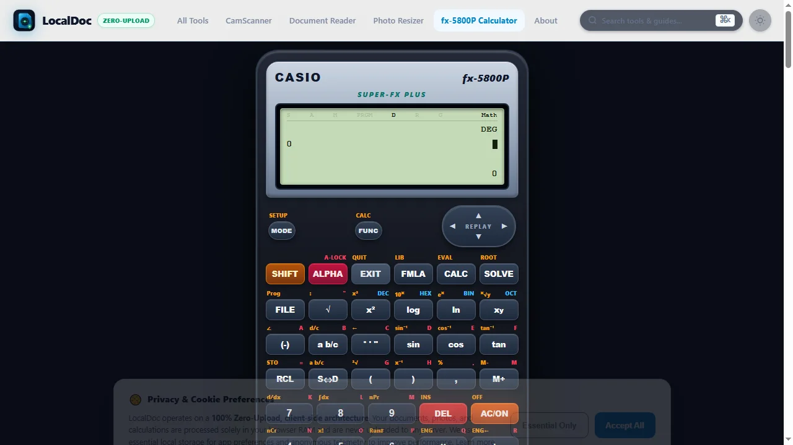
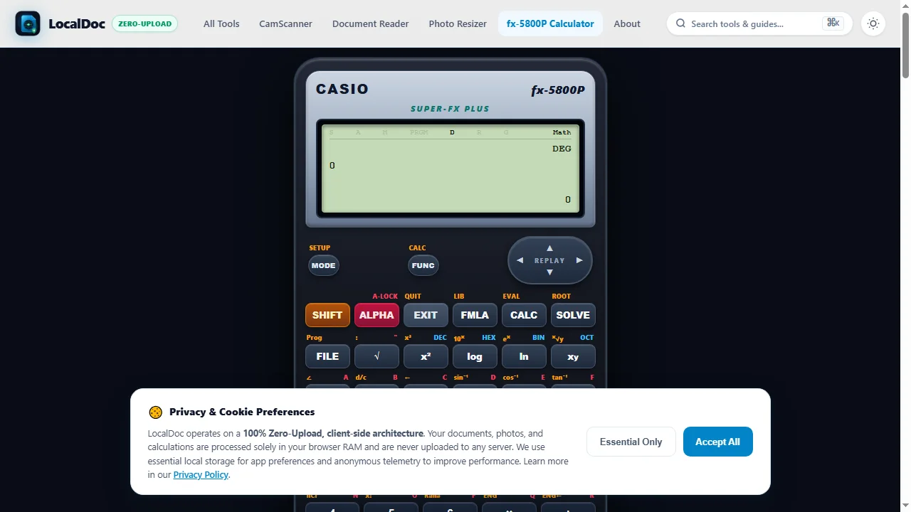
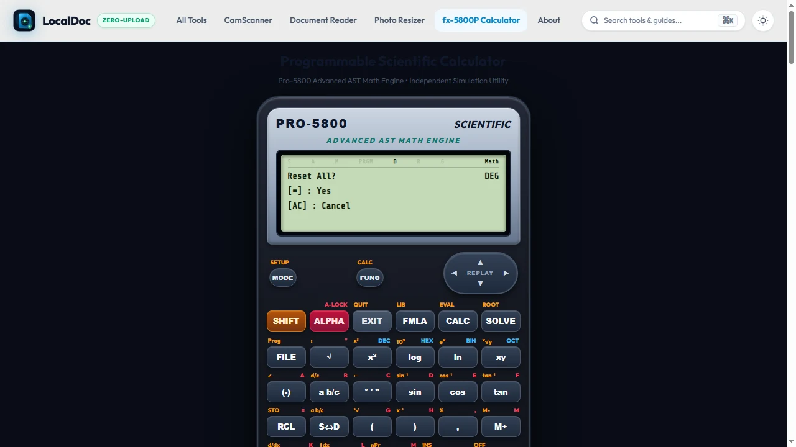
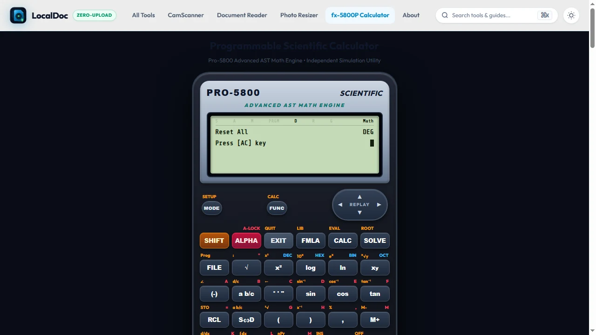
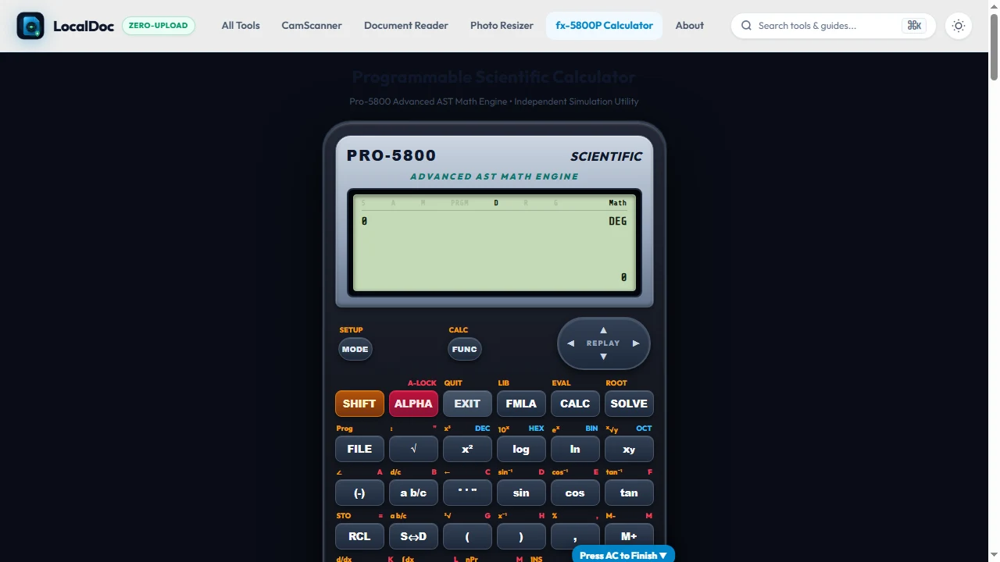

Casio fx-83GTX & fx-85GTX UK Student Guide: Keypad Buttons, GCSE Exam Secrets & Cheat Sheet
The ultimate handbook for UK Year 7 to Year 11 pupils and parents. Learn which buttons you actually need for Key Stage 3 and GCSE exams, why you should ignore the mysterious hyp key, how to execute the 3-second exam reset, and how to avoid the fatal Degree vs. Radian trap.
🧮 Forgot Your Calculator At School?
Open the free LocalDoc Casio-layout simulator in your browser. Practice fractions, powers, trigonometry, and statistics without downloading any software.
What Does the HYP Key Mean for UK Year 7 Maths?
If your Year 7 child or student is asking what hyp does: They can safely ignore it completely!
The hyp button stands for Hyperbolic trigonometry (sinh, cosh, tanh). This is a university-level advanced calculus and electrical engineering topic. Casio installs the exact same central computing chip in standard secondary school calculators as it does in higher education models. It is never tested in UK Key Stage 3 or Key Stage 4 (GCSE) maths.
- S⇔D – Turns fractional answers (like 3/8) into decimal numbers (0.375).
- ■/□ – The fraction bar key to enter exact fractions.
- x² & √■ – Square and square root keys.
- ( & ) – Brackets to force the correct BIDMAS / BODMAS order of operations.
- (-) – The negative number key (different from the subtract minus sign).
1. fx-83GTX vs. fx-85GTX: What Is the Difference?
Every September, hundreds of thousands of parents across England, Wales, Scotland, and Northern Ireland receive school stationery lists recommending either the Casio fx-83GTX or the Casio fx-85GTX (or the newest fx-83GT CW ClassWiz).
Here is the secret: They are functionally 100% identical. Both feature the exact same screen resolution, Natural-V.P.A.M. (which displays fractions and roots exactly as written in textbooks), 276 mathematical functions, and identical keystroke combinations.
| Model | Power Source | Battery Life | GCSE Approved? | Best For |
|---|---|---|---|---|
| Casio fx-83GTX | 1 × AAA Alkaline Battery | ~2 Years (replaceable in seconds) | ✓ 100% JCQ Approved | Standard school use, budget-friendly |
| Casio fx-85GTX | Twin Power (Solar + 1 × LR44 Button) | ~3–4 Years under classroom lights | ✓ 100% JCQ Approved | Students who want solar backup peace of mind |
| fx-83GT CW / fx-85GT CW | 1 × AAA or Solar (New 2023+ Look) | ~2 Years (New icon-based OS) | ✓ 100% JCQ Approved | Newest model with rounded ergonomic keys |
2. The 7 Must-Know Exam Keys for GCSE Maths
GCSE exam boards (Edexcel, AQA, OCR, and Eduqas) deliberately design Paper 2 and Paper 3 questions to test whether students know how to operate their scientific calculator efficiently. Here are the 7 indispensable buttons:
1. The S⇔D Button (Standard to Decimal)
The Problem: You calculate 13 ÷ 4 and the screen displays 13/4. In panicked exam conditions, students assume their calculator is broken.
The Solution: Press S⇔D once to display 3.25. Press it again to return to 13/4. Press SHIFT then S⇔D to convert it into a mixed fraction: 3 1/4.
2. The Hidden FACT Feature (Instant Prime Factor Trees)
Every single GCSE foundation and higher paper has a 2-mark question asking: "Express 360 as a product of its prime factors in index form." Instead of drawing a lengthy factor tree by hand, let the calculator verify it instantly:
Note: The FACT label is printed in tiny yellow letters above the degrees/minutes/seconds button ° ' ".
3. The ×10x Key (Standard Form / Scientific Notation)
On older calculators, this button was labeled EXP. On the fx-83GTX and fx-85GTX, it is located on the bottom row as ×10x.
Common Student Error: To enter 4.5 × 106, students often type [4.5] [×] [10] [x■] [6]. This can cause severe BIDMAS calculation errors when dividing.
4. Negative Key (-) vs. Subtraction Key −
Using the subtraction symbol − instead of the unary negation symbol (-) often triggers an unwanted Ans - or Syntax ERROR. When squaring a negative number (e.g., −3²), always enclose it in brackets: [ ( ] [(-)] [3] [ ) ] [x²] = 9. Typing [(-)] [3] [x²] will output -9 because powers take precedence over signs in standard algebra!
⚠️ The Fatal DEG vs. RAD Trap: Check Before Every Maths Exam
Look at the very top of your calculator's LCD screen. You will see several microscopic black indicators:
- D (Degrees): CORRECT for UK GCSE.
sin(30) = 0.5. - R (Radians): DANGER for GCSE.
sin(30) = -0.9880316. If your screen shows R, you will lose marks on every single trigonometry and Pythagoras question! - G (Gradians): Obsolete 400-degree circle measurement. Never used in UK schools.
3. Visual Step-by-Step Guide: The 3-Second Emergency Exam Reset
Before entering the GCSE exam hall, an invigilator or teacher may ask you to clear your calculator memory. Also, if you accidentally press a button and your calculator gets stuck in STAT, TABLE, or displays odd fractions, memorize this 5-touch visual walkthrough:
Press Yellow SHIFT Key
Tap the yellow SHIFT button on the top-left of the keypad. An 'S' indicator symbol appears on the top status line of the LCD display, activating secondary functions.

Press Key 9 (CLR / RESET)
Press numeric key 9 (which has CLR or RESET printed above it in yellow). The LCD screen opens the Clear / Reset menu with options 1: Setup, 2: Memory, 3: Initialize All.

Select 3 (Initialize All)
Tap numeric key 3 to select Initialize All. The screen asks for confirmation: Reset All? [=]: Yes [AC]: Cancel.

Confirm with Equals (=)
Press the = (Equals / Yes) button on the bottom right. The firmware flushes all memory variables (A–F, M, X, Y), contrast biases, and temporary buffers.

Press AC to Complete & Restore Degrees Mode
Press the red AC key. The screen clears to 0 and locks in the safe letter "D" (Degrees), eliminating dangerous Radian errors and returning the machine to default natural textbook display.

This 3-second protocol completely flushes stored memory, restores Degrees mode, and guarantees compliance with JCQ exam regulations.
4. Using TABLE Mode for Quadratic and Cubic Graph Questions
GCSE exams regularly feature 4-mark questions asking you to complete a table of values and plot the curve for a quadratic like y = x² - 3x + 2 between x = -2 and x = 4.
Instead of plugging each value into the calculator seven times, use TABLE Mode:
- Press MENU and select 3: TABLE (or MODE → 3 on older models).
- Enter the function: Press ALPHA then ) to type
x, then press x² − 3 ALPHA ) + 2, and tap =. - When prompted for Start, enter
-2and tap =. - When prompted for End, enter
4and tap =. - When prompted for Step, enter
1and tap =.
The calculator immediately renders a clean two-column grid showing every x value paired with its exact f(x) coordinate. Copy these straight onto your exam question paper!
📚 Scientific Calculator Cluster & Guides
Explore our complete educational series to master every feature of your scientific calculator:
The comprehensive dictionary of every button: ENG, HYP, Pol, Rec, powers, and statistical symbols.
Learn how to calculate multi-item receipts and chained formulas without writing scrap numbers.